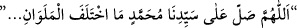
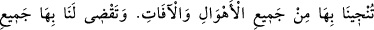
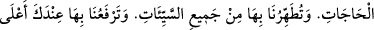
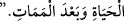
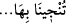

Hâtiften şöyle bir nidâ geldi: “Ey salevât gönderen kişi! Bu kelimelerin sevabını
yazma konusunda kirâmen kâtibîn meleklerini sıkıntıya düşürdün. Yüksek dereceler
elde ettin. Yaptığın kötülükler şu anda affedildi.”
“(Allâh’ım, efendimiz Muhammed’e ve efendimiz Muhammed’in âilesine öyle bir
salât ve selam et ki sen o salât sâyesinde bizi bütün korkulardan ve âfetlerden
kurtarırsın, onun sâyesinde tüm ihtiyaçlarımızı giderirsin, onun sâyesinde bizi bütün
günah ve kötülüklerden temizlersin, onun sâyesinde bizi senin nezdinde en yüksek
derecelere yükseltirsin, onun sâyesinde bizi hayatta ve ölümden sonra bütün
hayırlardan gayelerin en yücesine ulaştırırsın.”
Şifâü’s-sekam’da şöyle anlatılır: “Fâkihânî, Fecr-i Münîr adlı kitapta Şeyh Ebû
Mûsâ Darîr (r.h.)’tan şöyle nakleder: “Bir toplulukla gemide idik. Birden “rîh-i
iklâbiyye (ters çeviren rüzgar)” denilen rüzgâr esmeye başladı. Kaptanlar sıkıntıya
düştüler. Gemi bu rüzgârdan kurtulacak olursa nâdirattan sayacaklardı. Gemide
bulunanlar bu durumu anlayınca, bağırıp çığırmaya başladılar. Ölümü beklemeye
koyuldular. Birbirlerine vasiyette bulunuyorlardı. Birden gözüm uykuya daldı. Hz.
Peygamber (a.s.)’ı gördüm. Gemiye bindi ve “Ey Ebû Mûsâ! Gemidekilere söyle de bin
kere;
diye salevât getirsinler.” buyurdu. Uyandım ve bunu dostlara anlattım. Bu sözler
dilimde idi. Okumaya başladık; üç yüze yaklaşınca o rüzgâr dindi ve gemi güvenli bir
şekilde yoluna devam etti.
Mustafâ (s.a.)’e salevât getiriniz; çünkü O’na salevât getirmek
Bütün âfetlerden ve tehlikelerden emândır.
Ona selam ve tâzim bütün bereketlerin aslıdır.